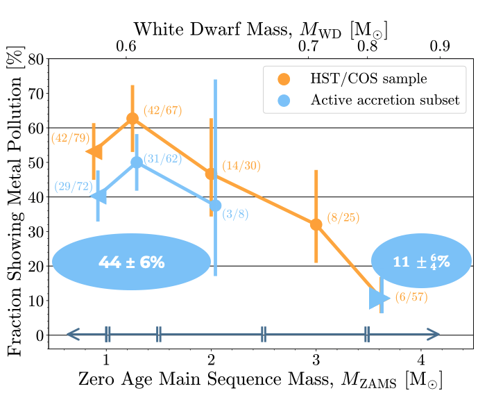
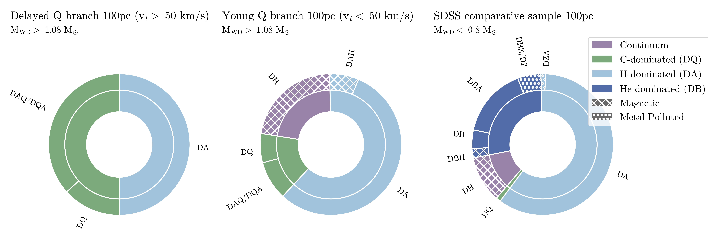
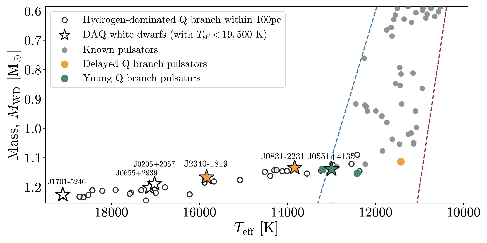

Remnant Planetary Systems
Massive white dwarfs (0.8–1.3 M☉) provide a unique way
to constrain planetary occurrence around intermediate mass main sequence stars (4–8 M☉) that are otherwise difficult to measure
with radial-velocity or transit surveys.
During my Ph.D., I found that planets seem to be missing around the descendants of intermediate-mass main sequence stars (A-B type).
While over 40% of white dwarfs harbor remnant planetary systems, HST/COS spectra reveal that far fewer massive white dwarfs exhibit pollution from heavy elements (Ould Rouis et al. 2024).
I then explored the use of extremely-low-resolution Gaia XP spectra in order to build a larger sample of these rare planet hosts (Ould Rouis et al. 2026b).
I've also identified hundreds of new white dwarf planetary hosts candidates with narrow-band photometry from the MAGIC survey within the DELVE collaboration (Ould Rouis et al. 2026c,in prep.).
Selected contributed talk: Know Thy Star, Know Thy Planet 2, IPAC Conference in Feb. 2025.
Watch here.

White Dwarf Metal Pollution Fraction
The fraction of white dwarfs with planetary debris drops sharply
for massive white dwarfs, the descendants of stars more massive than 3.5 M☉.
This discrepancy remains significant at 4σ even after accounting for atmospheric diffusion and radiative levitation
effects. This provided the first statistically significant evidence that planetary systems are rare around the descendants of
intermediate-mass stars. Top axis: white dwarf mass; bottom axis:
progenitor mass. Adapted from Ould Rouis et al. 2024.

Gaia XP Massive DZ Poster
Extremely-low-resolution Gaia XP spectra are reliable for
identifying metal-polluted white dwarfs.
EUROWD 26 Poster PDF
I have also been interested in the progenitor history of massive white dwarfs specifically tied to merger signatures, and recently completed a volume-limited study of merger remnants with high cooling delays on what is known as the Q branch, finding distinct populations in magnetism and photometric variability
(Ould Rouis et al. 2026a).
This work also extended the DAV instability strip for hydrogen-dominated, DAQ white dwarfs.

Atmospheric Composition of Q Branch White Dwarfs
White dwarfs with the longest cooling delays show neither strong
magnetism nor detectable short-period rotational variability.
Ould Rouis et al. 2026a

White Dwarf Instability Strip
The photometric variability study of the Q branch reveals a new
DAQ instability strip.
Ould Rouis et al. 2026a
I am interested in linking the kinematics of white dwarfs to Galactic locations, specifically being able to characterize halo white dwarfs and trace their origins to different halo substructures
Through a close collaboration with Dr. Laura Rogers (NSF-NOIRLab Fellow), we use HST observations of halo white dwarf candidates to investigate the frequency of remnant planetary systems in the halo compared with the thin disk (Rogers et al. in prep., Ould Rouis et al. in prep.).
You can find my full publication record on SciX by ADS and on my CV.